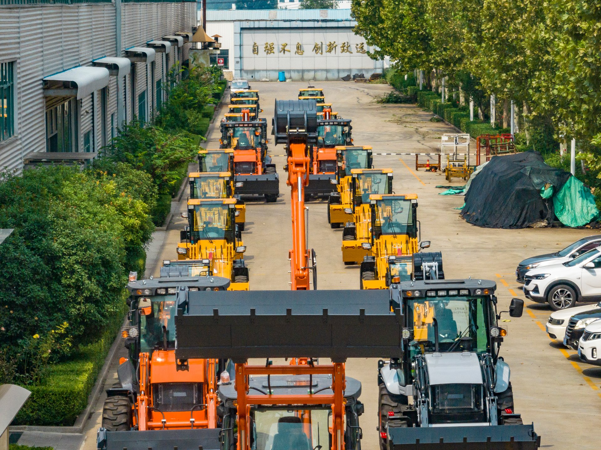
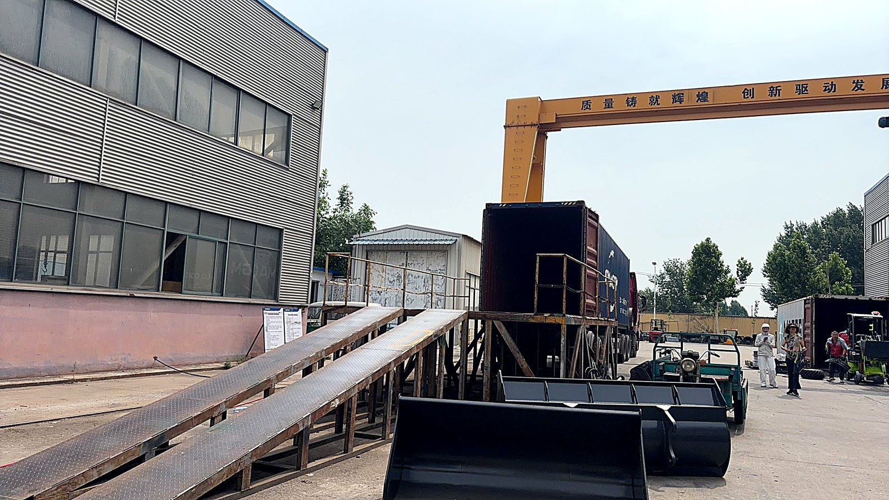

Machines bound for the Gulf get different cooling and filtration setups than machines bound for Europe. Same factory, different spec sheets.
Heat: The Slow Tax on Every System
Let me start with the part nobody's brochure talks about. A backhoe loader is a machine built around a diesel engine and a hydraulic system, and both of those are designed around assumed ambient temperatures. When the air around the machine is 45–50°C for weeks at a time, three things happen:
- The cooling system loses its margin. A radiator sized for 35°C ambient still works at 48°C — but it is now operating at the edge of its capacity. Add a partially dust-blocked core (see the next section) and the margin disappears entirely.
- Hydraulic oil temperature climbs. Hot oil is thinner oil. Thinner oil means internal leakage in pumps and valves, which means slower cycle times, more heat, and a feedback loop that ends with a relief valve dumping pressure and an operator sitting in a machine that will not dig.
- Batteries, seals and electronics age faster. Heat is chemistry's accelerator. Battery life in the Gulf is shorter. Cylinder seals harden earlier. Electrical connectors corrode quicker. None of this shows up in month one — it shows up in year two.
None of this means you cannot run a backhoe loader in the Gulf — thousands do, every day. It means the cooling specification is not a line item to skip when you compare quotes.
Dust: The Real Killer Is Finer Than You Think
If heat is a slow tax, dust is a silent one. Middle Eastern desert dust is not the coarse grit people imagine — much of it is fine silica flour that passes through gaps you cannot see and settles in places you cannot reach.
In practice, dust attacks three systems in order:
- The radiator core. Fins pack solid between the tubes. Airflow drops. The engine runs hotter. The air conditioning condenser (usually mounted in front) suffers the same fate, which is why Gulf operators complain about weak cab cooling long before they see an engine temperature warning.
- The air intake. A standard single-stage filter in heavy dust conditions clogs fast, and each clog pulls the engine harder against a restricted intake — turbo strain, black smoke, lost power.
- The hydraulic tank breather. Every time the cylinders extend, the tank level drops and the tank breathes in. If the breather filter is cheap or missing, that fine dust goes straight into your hydraulic oil. From there it travels into pumps and valves as abrasive slurry.
What I have learned from Gulf buyers: the machines that survive longest in this region are not the ones with the strongest engine — they are the ones whose owners blow out the radiator core weekly, check the air filter differential gauge daily, and treat cab pressurization as a dust defense, not a comfort feature.

Component-level inspection before shipping — cooling and filtration are exactly where desert-spec machines differ from standard builds.
The Configuration Shortlist for Gulf Work
When a Middle East buyer asks me to spec a machine, this is the priority order I work from. It is not a luxury list — it is what keeps the machine earning through July:
1. Oversized radiator and high-capacity fan
Ask the supplier for the radiator's designed ambient temperature, not just its dimensions. A machine built honestly for Gulf work has cooling capacity with headroom, not cooling capacity that barely passes a standard test.
2. Hydraulic oil cooler
Non-negotiable for continuous trenching, road work, or breaker attachment use in hot climates. If the quote does not include one and your application involves sustained hydraulic load, ask why.
3. Two-stage air filtration or a pre-cleaner
A pre-cleaner ejects most of the dust before it ever reaches the filter element, multiplying element life in desert conditions. It is inexpensive relative to what it protects.
4. Sealed, pressurized cab with A/C
A pressurized cab keeps dust out of the electrical system and the operator's lungs — and a working air conditioner is a safety system, not an option, when cabin temperatures without it become a genuine health hazard.
5. Hydraulic tank breather filter
The cheapest item on this list and the one most often missing. Make sure it exists and make sure spare elements are in your first parts order.
Do not accept "heavy duty" as a specification. Every brochure in the world says heavy duty. Ask for the line items above, one by one, and get them confirmed in writing on the specification sheet.
How the Region Buys: What Suppliers See From Our Side
After several years of working with buyers across the Gulf, a pattern shows up that is different from Africa or Southeast Asia:
- Specifications come first, price second. Gulf buyers — especially those supplying government infrastructure or oil-and-gas contractors — often arrive with a written technical specification and a compliance checklist. If your machine cannot tick the boxes, the price never enters the conversation.
- Documentation is taken seriously. Certificates of conformity, test reports, and traceable component lists are routinely requested and checked. A supplier who cannot produce documentation quickly loses these deals, and deservedly so.
- Payment terms are structured and conservative. Letters of credit and staged payments are common, which protects both sides — but it also means the supplier you choose must be financially and administratively set up to handle bank-grade paperwork.
- Delivery deadlines are contractual. Project schedules in the region are aggressive, and late machine delivery can cascade into real penalties. This cuts both ways: choose a supplier who can commit to a realistic date and then meet it.
For buyers, this cuts the other way too. The regional emphasis on specs and documentation is your best defense. It filters out suppliers who cannot back their claims before money moves.
Import Realities: Certificates Before Containers
One operational point worth planning for: machinery imports into the Gulf are certificate-driven. Saudi Arabia runs its conformity requirements through the SABER platform (product certificates plus shipment certificates under SASO standards), and other GCC states reference GSO standards. The exact requirements and fees change over time — confirm current rules with your customs broker for your specific destination before you ship, rather than assuming last year's process still applies.
Two practical consequences:
- A CE mark alone does not clear customs. A machine can be fully CE-compliant and still need separate Gulf certification. Buyers who discover this after the vessel sails pay for it in port storage days.
- Choose a supplier who has exported to the Gulf before. Not because the paperwork is impossible — it is not — but because an experienced supplier already knows which documents to prepare and which mistakes cause shipment holds. Ask them directly: "How many containers have you sent to the GCC in the last 12 months, and to which ports?"

Documentation determines how fast this container actually leaves the port on the other side.
After-Sales at Distance: Build the Parts Plan Into the Purchase
Here is the uncomfortable arithmetic of buying machinery from anywhere far away: freight to the Gulf is fast and customs at the major ports is efficient, but a single urgent spare part still has to travel. A two-week wait for a hydraulic pump seal kit in the middle of a project is not a shipping problem — it is a planning problem.
So I tell Gulf buyers the same thing I tell everyone, with more urgency: your spare parts package should ship inside the machine's own container.
For desert conditions specifically, the first parts order should include:
- Air filter elements (double the quantity you think you need) and pre-cleaner cups
- Hydraulic return filters and breather filter elements
- Fuel filter elements — dust attacks fuel systems with the same enthusiasm as everything else
- A complete set of V-belts
- Cylinder seal kits for the boom, dipper and bucket cylinders
- Bucket pins and bushings (wear parts, and always cheaper in the original shipment)
- A radiator core or, at minimum, a spare cooling fan
And on the process side, before you pay anything: agree on a parts dispatch time in writing, confirm the supplier can support video-call troubleshooting, and ask for photos of the actual parts warehouse — not a brochure photo. I wrote a full article on how to evaluate a supplier's after-sales before you pay — the checklist applies double in this region.
My honest advice for first-time Gulf buyers: do not judge the deal by the machine price alone. Judge it by the total package — cooling spec, filtration, certification support, parts plan, and the supplier's willingness to answer technical questions in writing before any deposit moves. The cheapest quote that fails on those five fronts is the most expensive machine you will ever buy.
Machines Worth a Look for This Region
From the range I work with, two models come up most often in Gulf conversations:
- BL 90-25 — a full-size machine with the cooling headroom for sustained hot-climate earthmoving and municipal work. This is the platform I point contractors to when the project is serious and the summer is long.
- BL 80-25 — a strong middle option: near full-size performance with a simpler logistics footprint, often the right balance for rental fleets and private contractors building their first Gulf inventory.
Both can be configured with the desert-spec shortlist above. Neither decision should be made without matching the machine to your actual workload first — if you tell me your project type and soil conditions, I will tell you honestly whether you need the bigger platform or whether you are paying for capacity you will never use.
Planning a Purchase for the Gulf?
Send me your project details and I will build you a desert-spec configuration sheet — cooling, filtration, cab, and a first parts package — with nothing hidden in the fine print.
Request a Quote for My Project